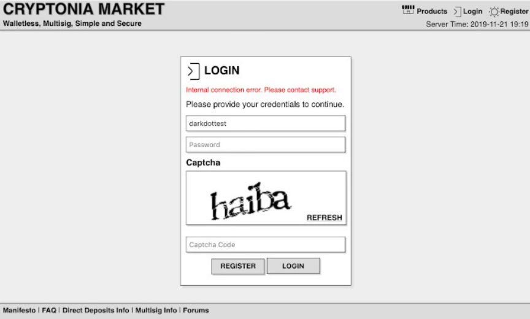
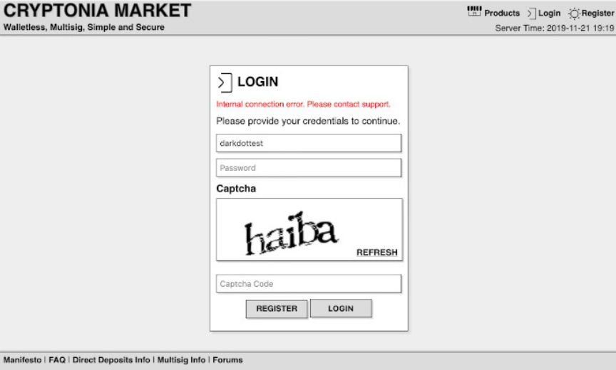

What Happened to Cryptonia Market?
~5 min read | Published on 2019-11-25, tagged Darkweb-Vendor using 1001 words.
After an unexpected shutdown followed by days of silence from staff, Cryptonia Market administration announced a hiatus of the market until 2020 as well as a plan to reimburse users who lost money during the downtime.
Using this tweet from Dark.Fail as a reference, it appears as if the market went down roughly 11 days prior to the publication of this article. Cryptonia Market administrators provided very little information about the downtime and remained completely silent until the ninth day when they posted a signed message on the Cryptonia Market forums.
In the message, the marketplace staff blamed “tamper protection on one of [their] servers” for the downtime. The tamper protection allegedly triggered a shutdown. More surprisingly, though, the staff wrote that they had already planned to shut down “for a couple months” due to staffing issues. They indicated that the recent seizure of Berlusconi Market and disappearance (exit scam) of SamSara Market had overloaded their staff members.
This is not unlike the events that preceded the Hansa Market shutdown; after law enforcement had seized the largest marketplace at the time, Alphabay, users flocked to Hansa Market. They had to temporarily shut down registrations. The influx surprised even the law enforcement agencies secretly running the marketplace (and their operation relied on users switching to Hansa in the wake of the Alphabay seizure).
In the message, the administration explained that migration to a new server would take time. They would instead end operations for the time being to “disburse funds the their rightful owners.” After dispersing all remaining funds, the market will enter a so-called “hiatus mode” until the market re-opens in 2020. The “hiatus mode” will allow “multisig users to get their tx hexes.”
The message indicated that the market would re-open in 2020 as the same market. One line in the message hints at what could be an alternate outcome. “We hope to see you at our next market,” the administration wrote at the end of the message.
Dark.Fail wrote the following in a tweet about the market on November 21.
Cryptonia’s login page is back online but displays “Internal connection error. Please contact support.” when a login is attempted.
This reminds me of Berlusconi’s CAPTCHA errors for days following their arrest

Users on a number of forums have discussed the possibility of an exit scam as well as the possibility that law enforcement had seized the market or arrested the market’s administrators. Some users suspect that the proposed reimbursement of buyers and sellers is simply a trap to collect more Bitcoin addresses. There is no evidence to support this rumor unless one counts the random Envoy or Avengers users claiming they “knew Cryptonia was a honeypot all along” as a form of evidence. Dark.Fail’s warnings about the similarities between Cryptonia Market (in its current state) and a number of seized markets is the most reasonable statement concerning possible law enforcement involvement.
History repeats itself and this is no exception to the rule. CGMC is the only recent market to shut down and allow all users to withdraw their Bitcoin. One could make a case for Dream; the administrator of Dream Market provided users with a warning and ample time to withdraw funds before ending operations. When Dream finally shut down, a number of users cashed out. Others claimed they were unable to withdraw funds.
No normal market would return funds to their users in such a situation. Cryptopia certainly went their own way though and operated much differently than the majority of popular marketplaces. They appeared to value security above all else. Perhaps they value integrity as well.
Some users on the Darknet Avengers forum allegedly received payments from Cryptonia, according to posts in a recent thread. Others, in the same thread, have not heard or received anything. There is likely a backlog of support tickets that would cause such a delay in resolving individual cases. But that backlog would only matter if the market planned on reimbursing users.
The message body is pasted below. Dark.Fail and others managed to successfully grab a copy of the message before the Cryptonia Market forums went down. Some have had difficulty verifying the message due to its formatting. The linked copy is formatted correctly and checks out.gpg: Signature made Fri 22 Nov 2019 [snip]gpg: using RSA key 2B258BE36E904222152B5F25952F49D53FDCD985gpg: Good signature from "Cryptonia Darknet Market <[email protected]>" [unknown]gpg: Note: This key has expired!Primary key fingerprint: 984C 70B4 3BBE 9584 4622 4ACE 3413 C2DE 66CA 8CD6 Subkey fingerprint: 2B25 8BE3 6E90 4222 152B 5F25 952F 49D5 3FDC D985
The Message
Dear users,
We sincerely apologize for the unexpected downtime. It was caused by a tamper protection on one of our servers which led to the shutdown of our backend. For opsec reasons we cannot disclose more. The important thing is that our security measures worked and all the funds on escrow are safe.
The bad news is that we already had plans to close shop for a couple months due to being short-handed. Recent events have made matters worst. To bring the market back up safely we must migrate our entire infrastructure to new servers, that would mean at least a week before we can re-open. Instead we have decided to do our best to disburse the funds the their rightful owners as follows:
Unshipped orders will be refunded to buyers Shipped orders will be finalized and paid to vendors Disputed orders will be split 50/50
We hope that this way most of the funds will go to their rightful owners, and we ask our users to do the right thing in the few cases where it doesn’t. After all payments are sent the market will re-open on “hiatus mode” to allow multisig users to get their tx hexes and profiles accessed. It will remain in hiatus mode until we re-open in 2020.
We realize this is a huge inconvenience and we have done the best that we can under the circumstances. We wish you all a happy xmas and we hope to see you at our next market.
Regards,
The Cryptonia Market Team
Using this tweet from Dark.Fail as a reference, it appears as if the market went down roughly 11 days prior to the publication of this article. Cryptonia Market administrators provided very little information about the downtime and remained completely silent until the ninth day when they posted a signed message on the Cryptonia Market forums.
In the message, the marketplace staff blamed “tamper protection on one of [their] servers” for the downtime. The tamper protection allegedly triggered a shutdown. More surprisingly, though, the staff wrote that they had already planned to shut down “for a couple months” due to staffing issues. They indicated that the recent seizure of Berlusconi Market and disappearance (exit scam) of SamSara Market had overloaded their staff members.
This is not unlike the events that preceded the Hansa Market shutdown; after law enforcement had seized the largest marketplace at the time, Alphabay, users flocked to Hansa Market. They had to temporarily shut down registrations. The influx surprised even the law enforcement agencies secretly running the marketplace (and their operation relied on users switching to Hansa in the wake of the Alphabay seizure).
In the message, the administration explained that migration to a new server would take time. They would instead end operations for the time being to “disburse funds the their rightful owners.” After dispersing all remaining funds, the market will enter a so-called “hiatus mode” until the market re-opens in 2020. The “hiatus mode” will allow “multisig users to get their tx hexes.”
The message indicated that the market would re-open in 2020 as the same market. One line in the message hints at what could be an alternate outcome. “We hope to see you at our next market,” the administration wrote at the end of the message.
Dark.Fail wrote the following in a tweet about the market on November 21.
Cryptonia’s login page is back online but displays “Internal connection error. Please contact support.” when a login is attempted.
This reminds me of Berlusconi’s CAPTCHA errors for days following their arrest

The Faulty Login Page | Dark.Fail
Users on a number of forums have discussed the possibility of an exit scam as well as the possibility that law enforcement had seized the market or arrested the market’s administrators. Some users suspect that the proposed reimbursement of buyers and sellers is simply a trap to collect more Bitcoin addresses. There is no evidence to support this rumor unless one counts the random Envoy or Avengers users claiming they “knew Cryptonia was a honeypot all along” as a form of evidence. Dark.Fail’s warnings about the similarities between Cryptonia Market (in its current state) and a number of seized markets is the most reasonable statement concerning possible law enforcement involvement.
History repeats itself and this is no exception to the rule. CGMC is the only recent market to shut down and allow all users to withdraw their Bitcoin. One could make a case for Dream; the administrator of Dream Market provided users with a warning and ample time to withdraw funds before ending operations. When Dream finally shut down, a number of users cashed out. Others claimed they were unable to withdraw funds.
No normal market would return funds to their users in such a situation. Cryptopia certainly went their own way though and operated much differently than the majority of popular marketplaces. They appeared to value security above all else. Perhaps they value integrity as well.
Some users on the Darknet Avengers forum allegedly received payments from Cryptonia, according to posts in a recent thread. Others, in the same thread, have not heard or received anything. There is likely a backlog of support tickets that would cause such a delay in resolving individual cases. But that backlog would only matter if the market planned on reimbursing users.
A Vendor on DN Avengers Allegedly Refunded by Cryptonia
The message body is pasted below. Dark.Fail and others managed to successfully grab a copy of the message before the Cryptonia Market forums went down. Some have had difficulty verifying the message due to its formatting. The linked copy is formatted correctly and checks out.gpg: Signature made Fri 22 Nov 2019 [snip]gpg: using RSA key 2B258BE36E904222152B5F25952F49D53FDCD985gpg: Good signature from "Cryptonia Darknet Market <[email protected]>" [unknown]gpg: Note: This key has expired!Primary key fingerprint: 984C 70B4 3BBE 9584 4622 4ACE 3413 C2DE 66CA 8CD6 Subkey fingerprint: 2B25 8BE3 6E90 4222 152B 5F25 952F 49D5 3FDC D985
The Message
Dear users,
We sincerely apologize for the unexpected downtime. It was caused by a tamper protection on one of our servers which led to the shutdown of our backend. For opsec reasons we cannot disclose more. The important thing is that our security measures worked and all the funds on escrow are safe.
The bad news is that we already had plans to close shop for a couple months due to being short-handed. Recent events have made matters worst. To bring the market back up safely we must migrate our entire infrastructure to new servers, that would mean at least a week before we can re-open. Instead we have decided to do our best to disburse the funds the their rightful owners as follows:
We hope that this way most of the funds will go to their rightful owners, and we ask our users to do the right thing in the few cases where it doesn’t. After all payments are sent the market will re-open on “hiatus mode” to allow multisig users to get their tx hexes and profiles accessed. It will remain in hiatus mode until we re-open in 2020.
We realize this is a huge inconvenience and we have done the best that we can under the circumstances. We wish you all a happy xmas and we hope to see you at our next market.
Regards,
The Cryptonia Market Team